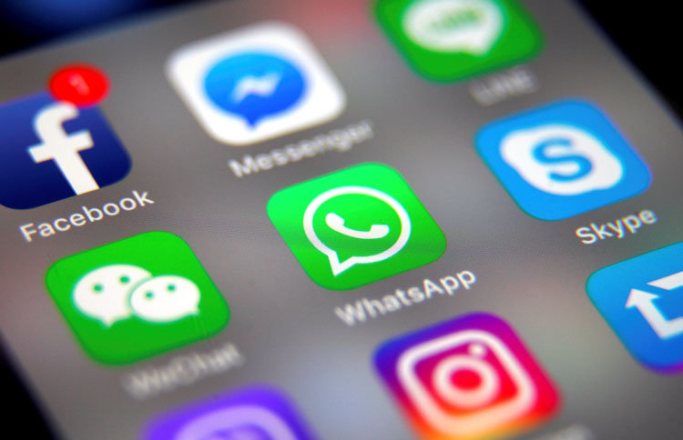
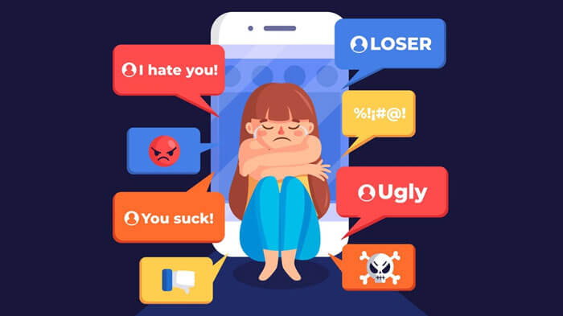

|
Es importante tener siempre en cuenta que así como las redes sociales nos entretienen y nos ayudan en momento difíciles,
también pueden comvertirse en un vedadero problema si no le damos el uso correcto.
Es por esto que es importante conocer sus ventajas y desventajas.
Las desventajas que nos pueden ocasionar el mas uso de la tecnología son:
Estafas en redes sociales: Las estafas en las redes sociales a personas son cada día más comunes.los estafadores se encargan de engañar a las personas
para obtener su información privada.
Adicción a las redes sociales:dejar de lado las obligaciones o perder mucho tiempo en las redes sociales puede ser un problema grave, sobre todo para
jóvenes que viven pendientes de la imagen que reflejen en las redes sociales.Estas situaciones suelen ser más frecuentes en adolescentes. La mejor manera de solucionarlo es controlando
sus hábitos y los contenidos que comparten en redes sociales.

Suplantación de identidad:La suplantación de identidad consiste en hacerse pasar por otra persona para obtener un beneficio.
En redes sociales se realiza este tipo de delitos y al igual que en el anterior punto, el de las estafas,
si nos han suplantado la identidad en redes lo primero que debemos hacer es denunciarlo.
Fake news
Las fake news o noticias falsas son un tipo de bulo que consiste en difundir a través de diferentes plataformas, también redes sociales,
cuyo objetivo es la desinformación.De aquí la importancia de contrastar fuentes.
Ciberbullying y Grooming: Son dos fenómenos que afecta sobre todo a niños y jóvenes menores de edad.
Ciberacoso: El ciberacoso es la variante digital del acoso escolar que consiste en humillar a una persona de forma reiterada
con mensajes insultantes y crueles o amenazas en redes sociales.
Grooming: El grooming son adultos que, haciéndose pasar por jóvenes, entablan una relación de amistad y
confianza con menores para convencerles para que les envíen imágenes eróticas.

|
|